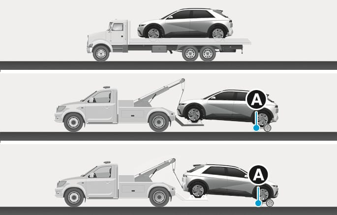
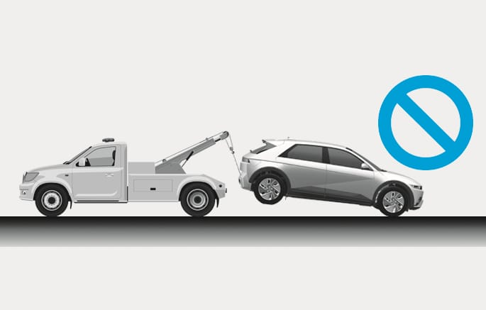

전기차의 견인이 필요한 경우
전기차를 견인해야 하는 경우 모든 바퀴를 들어올려 견인하십시오. 바퀴가 지면에 닿은 상태로 견인하는 경우 구동 부품이 손상될 수 있습니다.
배터리에 화재가 발생한 차량을 견인하는 경우 소방차의 동행을 요청하십시오. 견인 중 2차 화재가 발생할 수 있습니다.

2C_TowingGood
- 돌리

2C_TowingBad

2C_TowingBad_2
전기차를 견인해야 하는 경우 모든 바퀴를 들어올려 견인하십시오. 바퀴가 지면에 닿은 상태로 견인하는 경우 구동 부품이 손상될 수 있습니다.
배터리에 화재가 발생한 차량을 견인하는 경우 소방차의 동행을 요청하십시오. 견인 중 2차 화재가 발생할 수 있습니다.

2C_TowingGood
2C_TowingBad

2C_TowingBad_2